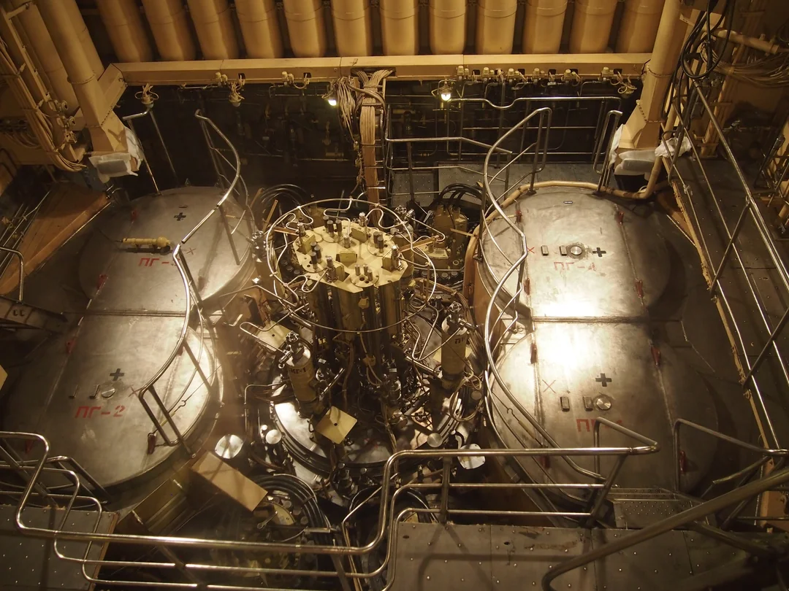

Nuklearna energija je oblik energije koja se oslobađa cijepanjem ili spajanjem atomskih jezgri, pri čemu se stvara velika količina topline.
Ta toplina se koristi za zagrijavanje vode i stvaranje pare koja pokreće turbine, proizvodeći električnu energiju. Nuklearna energija je vrlo efikasna i niskougljična,
što je čini važnim izvorom za dugoročno zadovoljenje globalnih energetskih potreba. Osim proizvodnje električne energije, koristi se i u medicini, industriji te istraživanju svemira.
Ipak, upravljanje nuklearnim postrojenjima zahtijeva stroge sigurnosne mjere zbog mogućnosti nesreća i nastajanja radioaktivnog otpada, što ovu tehnologiju čini izazovnom,
ali ključnom za održivi razvoj moderne civilizacije.
Tipična nuklearna elektrana.
Povijest
Kratka povijest nuklearne energije.
1938. – Otkriće Fizije:
Otto Hahn i Fritz Strassmann u Njemačkoj otkrili su fenomen nuklearne fizije (cijepanje jezgre urana),
što je postalo temelj za sve nuklearne reaktore i oružje.
1942. – Prvi kontrolirani reaktor: Enrico Fermi i njegov tim uspješno su postigli prvu samoodrživu
nuklearnu lančanu reakciju u eksperimentalnom reaktoru Chicago Pile-1 (CP-1).
1945. – Projekt Manhattan: Sjedinjene Države, u sklopu tajnog Projekta Manhattan, razvijaju i koriste prve atomske bombe,
čime je nuklearna tehnologija primarno usmjerena na vojne svrhe.
1954. – Prva nuklearna elektrana: U Obninsku (SSSR) je puštena u pogon prva nuklearna elektrana na svijetu koja je generirala električnu energiju za komercijalnu mrežu,
čime započinje era "Atoma za mir".
1986. – Katastrofa u Černobilu: Nesreća u elektrani Černobil (današnja Ukrajina) je najteža nesreća u povijesti civilne nuklearne energije,
koja je značajno utjecala na javnu percepciju i sigurnosne standarde.
Calder Hall; prva svjetska nuklearna elektrana industrijskih razmjera.
Suvremeno stanje
Nuklearna energija u 2025. godini doživljava značajan globalni preporod, potaknut hitnom potrebom za dekarbonizacijom energetskog sektora i osiguranjem stabilnog izvora električne energije (base load).
Ključni trend je fokus na malim modularnim reaktorima (SMR), koji obećavaju manju investiciju, kraće vrijeme izgradnje i veću fleksibilnost u usporedbi s tradicionalnim gigantskim elektranama.
Zemlje poput Kine i Rusije nastavljaju s agresivnom izgradnjom velikih reaktora, dok Zapad i druge razvijene ekonomije, uključujući SAD, Kanadu i Ujedinjeno Kraljevstvo, ulažu značajna sredstva u razvoj i licenciranje SMR tehnologije.
Iako se i dalje suočava s izazovima vezanim uz zbrinjavanje radioaktivnog otpada i javnu percepciju, nuklearna energija se sve više prepoznaje kao ključni partner obnovljivim izvorima u borbi protiv klimatskih promjena.
Glavna primjena nuklearne energije danas je proizvodnja električne energije u komercijalnim nuklearnim elektranama, koje čine oko 10% globalne proizvodnje električne energije i najveći su izvor niskougljične energije nakon hidroelektrana.
Ipak, primjena se proteže daleko izvan elektrana:
Medicinska dijagnostika i terapija: koriste se radioizotopi za snimanje (PET) i liječenje raka (brahiterapija).
Pogonski sustavi: nuklearni reaktori pogone velike brodove (nosače zrakoplova, podmornice) zbog potrebe za dugotrajnim radom bez punjenja goriva.
Industrijska primjena: izotopi se koriste za mjerenje debljine materijala, radiografsku kontrolu zavarenih spojeva i sterilizaciju medicinske opreme.
Svemirsko istraživanje: nuklearne baterije (RTG) pružaju dugotrajnu energiju za sonde koje putuju daleko od Sunčeve svjetlosti (npr. Voyager, New Horizons).

Nuklearni fisijski reaktor KLT-40 (toplinske snage 135 MW) koji pokreće ruski teretni brod na nuklearni pogon "Sevmorput".
Nuklearna energija
Tehnologija
Vrsta reaktora
Prednosti
Nedostatci
Primjeri
Nuklearna fizija
LWR (PWR/BWR)
Dokazana i stabilna tehnologija
Radioaktivni otpad
NE Krško (PWR)
Brzi reaktori
Bolje iskorištenje goriva
Veći sigurnosni zahtjevi
BN-600, BN-800
SMR – mali modularni reaktori
Fleksibilni, manji kapitalni trošak
Još nisu široko implementirani
NuScale projekti
Nuklearna fuzija
Tokamak
Bez dugotrajnog otpada
Tehnologija još eksperimentalna
ITER
Stelarator
Potencijalno stabilniji rad
Kompleksan dizajn
Wendelstein 7-X
Fuzija ima potencijal postati ključni izvor energije u budućnosti, ali još nije komercijalna.